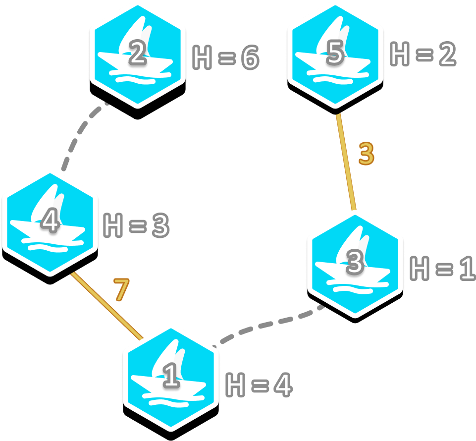

Di kampung halaman Pak Dengklek, terdapat $N$ buah pelabuhan dan $M$ ruas jalan. Pelabuhan-pelabuhan dinomori dari $1$ sampai $N$ dan ruas-ruas jalan dinomori dari $1$ sampai $M$. Ruas jalan $j$ menghubungkan pelabuhan $U_j$ dengan $V_j$.
Pelabuhan $i$ mempunyai ketinggian $H_i$ meter di atas permukaan air laut. Untuk setiap dua pelabuhan berbeda $u$ dan $v$, Pak Dengklek dapat membangun jembatan yang menghubungkan keduanya dengan biaya $H_u + H_v$ juta rupiah. Untuk alasan keamanan, setiap pelabuhan hanya dapat terhubung dengan paling banyak satu jembatan.
Pak Dengklek ingin membangun nol atau lebih jembatan dengan total biaya sekecil mungkin sedemikian sehingga seluruh pelabuhan saling terhubung. Dengan kata lain, untuk setiap pasang pelabuhan berbeda, harus terdapat jalur yang menghubungkan keduanya, baik secara langsung maupun tidak langsung, melalui ruas jalan maupun jembatan. Bantulah Pak Dengklek menentukan total biaya minimum yang harus dikeluarkan untuk menghubungkan seluruh pelabuhan! Anda juga harus memberi tahu Pak Dengklek apabila ternyata tidak ada cara untuk menghubungkan seluruh pelabuhan.
Pak Dengklek juga mempunyai tingkat keingintahuan sebesar $Q$. Apabila $Q = 1$ dan terdapat cara untuk menghubungkan seluruh pelabuhan, Anda juga diminta untuk membantu menentukan pasangan-pasangan pelabuhan yang perlu dihubungkan. Apabila terdapat lebih dari satu cara, Anda dapat menghubungkan dengan cara mana pun. Namun, apabila $Q = 0$, Anda boleh menyebutkan total biaya minimumnya saja.
Masukan diberikan dalam format berikut:
N M Q H1 H2 … HN U1 V1 U2 V2 ⋮ UM VM
Baris pertama berisi sebuah bilangan yang menyatakan total biaya minimum dalam juta rupiah, atau -1 apabila tidak ada cara.
Apabila $Q = 1$ dan terdapat cara untuk menghubungkan seluruh pelabuhan, maka dilanjutkan dengan baris kedua yang berisi sebuah bilangan $K$ yang menyatakan banyaknya jembatan yang perlu dibangun. Kemudian, $K$ baris berikutnya berisi dua buah bilangan $X_k$ dan $Y_k$ yang menyatakan jembatan $k$ menghubungkan pelabuhan $X_k$ dan pelabuhan $Y_k$.
Apabila $Q = 0$, Anda masih diperbolehkan untuk mengeluarkan cara tersebut meskipun tidak akan mempengaruhi penilaian.
5 2 1 4 6 1 3 2 1 3 2 4
10 2 1 4 5 3
Contoh ini diilustrasikan dengan gambar berikut. Garis kuning menunjukkan jembatan yang dibangun dengan biaya pembangunan tertulis di sebelahnya. Garis putus-putus menunjukkan ruas jalan.

Biaya untuk membangun kedua jembatan tersebut adalah $H_1 + H_4 = 4 + 3 = 7$ dan $H_3 + H_5 = 1 + 2 = 3$. Total biayanya adalah $7 + 3 = 10$, yang merupakan total biaya minimum.
5 1 1 2 1 4 3 4 3 5
-1
Tidak ada cara untuk menghubungkan seluruh pelabuhan karena pada setiap pelabuhan hanya dapat dibangun paling banyak satu jembatan. Oleh karena itu, meskipun $Q = 1$, tidak perlu mengeluarkan pasangan-pasangan pelabuhan yang perlu dihubungkan.
3 1 0 2 8 1 1 3
9
Pasangan pelabuhan yang perlu dihubungkan adalah pelabuhan $2$ dengan pelabuhan $3$. Anda tidak perlu mengeluarkan pasangan-pasangan pelabuhan yang perlu dihubungkan karena $Q = 0$.